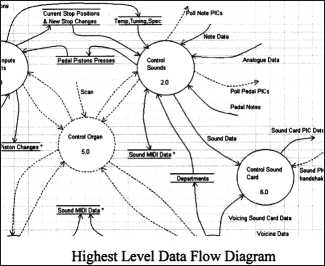
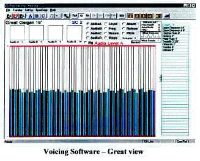

First
and foremost, the PHOENIX SYSTEM is UNIQUE. There is no comparison or connection with any previous
organ hardware or software... completely unique.
One
of the most important features in any organ is its response
to key presses. The Phoenix Organ utilizes a scaleable
multiple processor architecture for its main control system.
For example, each keyboard is scanned by an individual
micro-processor and key presses and releases are passed to
the main organ control processor (the organ’s ‘brain‘).
This main control processor in turn controls the operation
of the sound generation pre-processors, so controlling the
sound of the instrument. Similar processors handle input
from stops and pistons. More control processors are provided
in larger instruments to ensure that the response to all
events is always consistent and prompt.
The
software for Phoenix organs has been developed using the
Yourdon method. This is a modern structured analysis and
design technique that is widely used in both business and
computer control systems.
Briefly,
it involves the definition of the system requirements and
then expands these in to processor tasks. By developing the
control software using this formal method, the Phoenix Organ
software is much more likely to offer a reliable service
than other systems. A pipe organ usually contains thousands
of pipes. Each pipe can be voiced, regulated and tuned. Our
system works on a similar basis. We can voice, regulate,
adjust the attack and release, and tune every note of every
rank independently.
Our
voicing software is written in the latest PC development
environment which takes the strain out of setting up an
organ.
On
a pipe organ, moving the expression pedal does not just vary
the volume of the sound, it also changes the tone by damping
higher frequencies. The Phoenix software simulates this by
also attenuating these higher frequencies. The calibration
curves of our expression can also be set using the voicing
software, emulating the closing speed of the swell shades.
The
effect of wind variation on a pipe organ can have a
significant effect on the sounds we hear. Our software
simulates this effect, and using our voicing software, each
stop's loading on the bellows can be set across four areas
of the keyboard. A large Open Diapason's bottom octave will
use far more wind than say the top octave of a Larigot. Each
stop’s response to bellows movement is also adjustable.
Wind calculations are performed hundreds of times per second
to guarantee pipe-like response. A pipe organ Tremulant
changes the pitch and loudness of a stop. We have
incorporated this into our design, plus a feature to provide
some randomness in Tremulant levels which occurs in pipe
reed stops.
One
of the key issues in the control of an electronic organ is
the allocation of sound resources. In a Phoenix Organ, a
separate, independent generating source is used for each
note of each stop that is played. It's hard to believe, but
there are some technologies in the market place do not work
in this manner with sound generators shared across stops. At
Phoenix, we believe that it is important that an electronic
organ replicates a pipe organ as closely as possible.
The
Phoenix Organ System can control wind blown ranks of organ
pipes as well as digital ranks. Facilities are
available within the control system for ranks of pipes to be
attached to divisions of the organ and played through the
console being managed by the Phoenix System. This
enables the Phoenix System to be used to supplement an
existing (or new) pipe organ by providing a new console
system with up-to-date control facilities and some digital
voices or for a principally digital Phoenix System to be
supplemented by some ranks of real pipes.